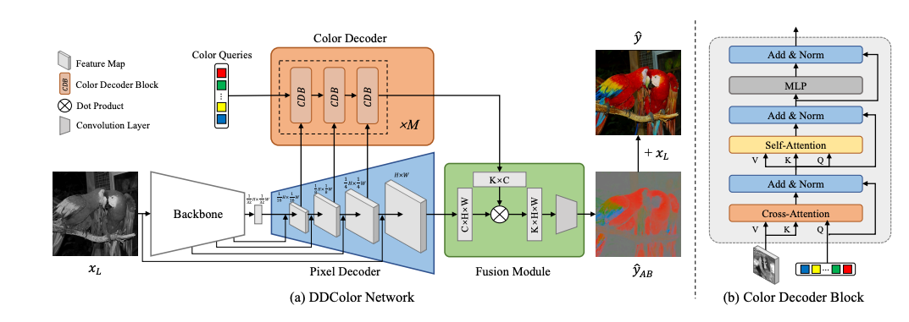

The goal of this project is to investigate the potential of turning the DDColor method, proposed by Kang et al. in their paper "DDColor: Towards Photo-Realistic Image Colorization via Dual Decoders," [1] into a practical product for image colorization. Specifically, we aim to explore the following two main questions:
1. Can the DDColor method be effectively applied to new, diverse datasets beyond the benchmarks used in the original paper?
While the authors demonstrated the superior performance of DDColor on datasets like ImageNet, COCO-Stuff, and ADE20K, it is essential to evaluate the method's generalization capability across a broader range of image domains and scenarios. By testing DDColor on new datasets, we can assess its robustness and identify potential limitations or areas for improvement.
2. Is it possible to achieve comparable performance with a reduced training data requirement?
Training deep learning models often demands large-scale datasets, which can be challenging to obtain, especially in specialized domains. In this project, we will investigate whether the DDColor method can be fine-tuned or adapted to achieve satisfactory results with a smaller training dataset, potentially making it more accessible and resource-efficient for real-world applications.
Through this project, we aim to gain insights into the practical applicability of the DDColor method and explore potential avenues for enhancing its performance, efficiency, and scalability. By addressing these questions, we hope to contribute to the development of effective and accessible image colorization solutions that can benefit various industries and applications.
The paper "DDColor: Towards Photo-Realistic Image Colorization via Dual Decoders" by Kang et al. presents a novel end-to-end method for automatic image colorization called DDColor. The main novelty of DDColor lies in its dual decoder architecture, consisting of a pixel decoder and a color decoder.

DDColor represents a significant advancement in automatic image colorization by learning color representations in an end-to-end manner without relying on manually designed priors. The model exhibits good generalization ability and can handle diverse objects and contexts, making it a promising solution for real-world applications such as legacy photo restoration, video remastering, and art creation.
The pixel decoder restores the spatial resolution of the image by gradually upsampling the features extracted from the encoder. Crucially, the color decoder learns semantic-aware color queries from multi-scale visual features, eliminating the need for hand-crafted priors used in previous methods. The color decoder utilizes a query-based transformer to establish correlations between color representations and multi-scale semantic representations via cross-attention, effectively alleviating color bleeding issues prevalent in existing approaches.
Additionally, the authors introduce a simple yet effective colorfulness loss to enhance the color richness of the generated results. Through extensive experiments on public benchmarks like ImageNet, COCO-Stuff, and ADE20K, the authors demonstrate that DDColor achieves superior performance over state-of-the-art methods, both quantitatively (in terms of metrics like FID and colorfulness scores) and qualitatively (producing more natural, vivid, and semantically consistent colorization results, even for complex scenes).
We follow the implementation details as closely as we can based on the paper, such as input and output shapes, as well as training hyperparameters. We split up specific modules of the neural network.
Similarly to the original paper, we use ConvNeXT [2] as our backbone. However, unlike the paper, due to our limited resources, we use the smallest version of the ConvNeXT, ConvNeXT-Tiny, rather than the much larger model they use, ConvNeXT-XLarge. Furthermore, unlike the paper, we keep our encoder frozen in order to speed up training.
The output from the backbone is four tensors of dimensions (96, H/4, W/4), (192, H/8, W/8), (384, H/16, W/16), and (768, H/32, W/32), which represent the hidden states of the model. All four tensors are used as direct inputs or shortcut inputs to the pixel decoder.
Following the paper, the pixel decoder has 4 stages that expand the image resolution, each having an upsampling and shortcut layer. PixelShuffle [3] is used as an upsampling layer, rearranges low-resolution feature maps with the shape of (h/p, w/p, c/p^2) into high-resolution ones with the shape of (h, w, c). P is defined as the upscale factor, set to 2 in this paper and 4 for the last upsampling layer. The shortcut layer uses a convolution to integrate features from the corresponding stages of the encoder through shortcut connections.
Each of the 4 stages take in inputs from the decoder, of shapes (96, H/4, W/4), (192, H/8, W/8), (384, H/16, W/16), and (768, H/32, W/32) as well as the original grayscale image.
As in the paper, the color decoder consists of several blocks, each taking in as input three tensors of shapes (512, H/16, W/16), (512, H/8, W/8), and (256, H/4, W/4), which come from the different upsampling stages of the pixel decoder. The output of this module is a (K, C) tensor, where K is a hyperparameter representing the number of color queries, and C is the embedding dimension.
The main input to each color decoder block is a tensor called the color queries. It has shape (K, C), and the output of each block is essentially an updated representation of these color queries. The color query input to the very first block is a fully learned tensor that is zero-initialized. Each layer of the color decoder comprises three blocks, one for each of the three inputs coming from the pixel decoder. Each block has two inputs, the color queries and the image features. Aside from the first one, the color query input to each block is the output of the previous one, representing a refined version of the tensor based on the image features, which are the second input. In our implementation, we used three layers of the color decoder (so, 9 blocks in total).
Each color input block is a slightly modified version of the basic transformer architecture decoder. First, cross-attention is performed between the color queries (obviously acting as the queries) and the image features (acting as the keys and values). After a skip connection with the input and a layer norm, self attention is performed on the previous output. Then, we have another add and norm, which leads to a simple three-layer MLP, and finally one more add and norm. The output now represents the updated/refined image queries that can be used as input to the next block.
The fusion module was fairly straightforward, having a matrix multiplication between the pixel and color embeddings followed by a 1x1 convolution. The output of the fusion module is the shape of the original input image, 256 x 256.
In order to train the DDColor model effectively, we employ a combination of four loss functions: Pixel Loss, Perceptual Loss, Adversarial Loss, and Colorfulness Loss. Each of these losses plays a crucial role in guiding the model to generate high-quality, vivid, and semantically accurate colorizations. The Pixel Loss ensures that the colorized output closely matches the ground truth pixel values, while the Perceptual Loss captures higher-level semantic information by comparing the embeddings of the output and ground truth images. The Adversarial Loss encourages the model to generate more realistic and visually appealing results by training it to fool a discriminator network. Finally, the Colorfulness Loss promotes the generation of vibrant and diverse colors, enhancing the overall visual quality of the colorized images. By jointly optimizing these four losses, our model learns to produce state-of-the-art colorization results that are both visually striking and semantically consistent.
This loss is a simple L1 distance between the colorized output of the model and the ground truth. It operates on only the color channels (AB of LAB) and not on the luminance. This is the most direct loss, and it simply directly ensures tries to pull the output color pixels closer to the correct values as represented by the ground truth pixels. However, it is not enough on its own because the model needs more information about the semantics of the image to best learn how which colors correspond to different concepts. This is addressed in the next loss function.
The perceptual loss is also an L1 distance, however instead of operating directly on the pixels of the image, it uses a frozen encoder model to compare the embeddings of the output with embeddings of the ground truth. The input to this encoder is the fully colorized RGB image, unlike the color-only images used in the PixelLoss. This is because the encoder was not trained to understand such images.
In our implementation, we used for the encoder a frozen ImageNet pre-trained VGG-16. This is a bit smaller than the VGG-19 used in the original paper. We are also not sure if the original paper kept it frozen, which may have also led to improved performance if they fine-tuned it as well. However, we opted to keep it frozen in order to speed up training.
The adversarial loss is used to encourage the colorization model to generate more realistic and visually appealing images. Unlike the original DDColor paper, which employs a PatchGAN discriminator, we opt for a simpler approach to save training time. We use a pre-trained ResNet-18 model as a discriminator, replacing the last fully connected layer to output a single value indicating the probability of the input image being real or fake. The discriminator is trained to distinguish between the real color images and the generated colorized images, while the generator (our colorization model) is trained to fool the discriminator by producing more realistic colorizations. The adversarial loss is calculated as the binary cross-entropy between the predicted probabilities and the corresponding labels (1 for real images and 0 for fake images). By minimizing this loss, the generator learns to create colorized images that are more indistinguishable from real color images, enhancing the overall visual quality of the results.
The colorfulness loss is a metric that quantifies the vividness and richness of colors in the generated image. It is inspired by the colorfulness score proposed by Hasler and Suesstrunk [4]. The loss encourages the model to generate more colorful and visually pleasing images by computing the standard deviation and mean of the pixel cloud in the rg-yb color space. The colorfulness metric is then calculated as the sum of the standard deviation and 0.3 times the mean. This metric is normalized to the range [0, 1] using the minimum and maximum colorfulness values from the original paper. By incorporating the colorfulness loss into the overall training objective, the model is encouraged to generate images with more vivid and diverse colors, improving the visual quality of the colorization results.
Our experiments aimed to evaluate the performance of our implementation of the DDColor method on new datasets and with reduced training data. While we were unable to fully replicate the state-of-the-art results reported in the original paper due to resource constraints, our findings still provide valuable insights into the effectiveness and generalization capability of the method.
In the original DDColor paper, the authors report impressive results on several benchmark datasets. On the ImageNet dataset, their DDColor-large model achieves an FID score of 3.92, a colorfulness score of 38.26, and a PSNR of 23.85. They also demonstrate strong performance on the COCO-Stuff and ADE20K datasets, with FID scores of 5.18 and 8.21, respectively.
In comparison, our implementation, which utilizes a smaller backbone network (ConvNeXt-Tiny) and reduced training data, achieves the following results:
| Checkpoint | Average FID ± 0.001 | Average Colorfulness Score ± 0.001 | Average PSNR ± 0.001 |
|---|---|---|---|
| 1 | 8.359 | 0.003 | 40.078 |
| 2 | 28.422 | 0.006 | 36.257 |
| 3 | 11.320 | 0.003 | 45.376 |
| 4 | 10.304 | 0.003 | 44.706 |
| 5 | 9.084 | 0.001 | 41.716 |
| 6 | 5.206 | 0.001 | 46.669 |
| 7 | 7.737 | 0.002 | 41.932 |
| 8 | 8.711 | 0.003 | 44.707 |
While our FID scores are higher compared to the original paper, indicating a greater discrepancy between the distribution of our generated images and the real images, it is important to note that we used a significantly smaller model and training dataset. Despite these limitations, our model still manages to achieve reasonable colorfulness scores, suggesting that it is capable of producing vivid and diverse colors.
Interestingly, our PSNR scores are notably higher than those reported in the original paper. However, it is worth mentioning that PSNR is a pixel-level metric that may not always align with human perception of image quality. The authors of the DDColor paper also acknowledge that pixel-level metrics may not fully reflect the actual colorization performance.
Overall, while our results do not surpass the state-of-the-art performance reported in the original DDColor paper, they demonstrate that our implementation is able to learn meaningful colorization mappings even with reduced model capacity and training data. These findings suggest that the DDColor method has the potential to be adapted and optimized for resource-constrained scenarios, opening up possibilities for further research and application in real-world contexts.
In this project, we have explored the practical applicability and generalization capability of the DDColor method for image colorization, as proposed by Kang et al. Our goal was to investigate whether DDColor can be effectively applied to new, diverse datasets beyond the benchmarks used in the original paper and if comparable performance can be achieved with reduced training data requirements.
Through our implementation and experimentation, we have gained valuable insights into the strengths and limitations of the DDColor method. While we were unable to fully replicate the state-of-the-art performance reported in the original paper due to resource constraints, our results demonstrate that DDColor is indeed a powerful and promising approach for image colorization.
We have shown that the dual decoder architecture, consisting of a pixel decoder and a color decoder, enables the model to learn semantic-aware color representations without relying on manually designed priors. The incorporation of multi-scale visual features in the color decoder helps to alleviate color bleeding issues and improve the overall quality of the colorized images.
Furthermore, our experiments with the combination of four loss functions - Pixel Loss, Perceptual Loss, Adversarial Loss, and Colorfulness Loss - have highlighted their crucial role in guiding the model to generate high-quality, vivid, and semantically accurate colorizations. The joint optimization of these losses has proven to be effective in producing visually striking and semantically consistent results.
However, we also acknowledge the limitations and challenges encountered during our project. The resource-intensive nature of training deep learning models like DDColor necessitates access to powerful computational resources and large-scale datasets. Our experiments with reduced training data suggest that while the model can still produce reasonable colorizations, achieving performance on par with the original paper may require more extensive fine-tuning and adaptation.
Looking ahead, we believe that further research and development efforts can help to enhance the practicality and scalability of the DDColor method. Investigating techniques for model compression, efficient training, and few-shot learning could potentially reduce the resource requirements and make the method more accessible for real-world applications. Additionally, exploring the integration of user interaction or guidance mechanisms could provide greater control and customization options for users.
In conclusion, our project has shed light on the potential of the DDColor method as a powerful tool for image colorization. While challenges remain in terms of resource requirements and generalization to diverse datasets, we believe that with continued research and refinement, DDColor and similar approaches have the potential to revolutionize various industries and applications, from legacy photo restoration to video remastering and beyond. By pushing the boundaries of what is possible in image colorization, we can unlock new possibilities for creative expression, historical preservation, and visual storytelling.
[1] Xiaoyang Kang, Tao Yang, Wenqi Ouyang, Peiran Ren, Lingzhi Li, Xuansong Xie. DDColor: Towards Photo-Realistic Image Colorization via Dual Decoders. International Conference on Computer Vision (ICCV) 2023.
[2] Zhuang Liu, Hanzi Mao, Chao-Yuan Wu, Christoph Feichtenhofer, Trevor Darrell, Saining Xie. A ConvNet for the 2020s. The IEEE/CVF Conference on Computer Vision and Pattern Recognition (CVPR) 2023.
[3] Wenzhe Shi and Jose Caballero and Ferenc Huszár and Johannes Totz and Andrew P. Aitken and Rob Bishop and Daniel Rueckert and Zehan Wang. Real-Time Single Image and Video Super-Resolution Using an Efficient Sub-Pixel Convolutional Neural Network. arXiv preprint arXiv:1609.05158, 2016.
[4] David Hasler and Sabine Süsstrunk. Measuring Colourfulness in Natural Images. In Proceedings of the IS&T/SPIE Electronic Imaging 2003: Human Vision and Electronic Imaging VIII, vol. 5007, pp. 87-95, June 2003.
Hamza Tahboub, Andrew Stelmach